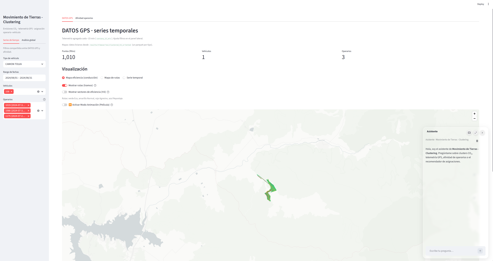
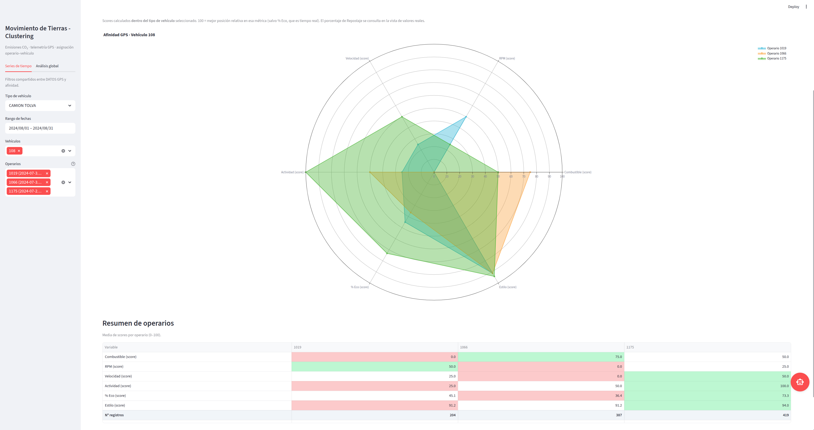

Multi-Agent Platform and Clustering Engine for Earthworks Management
Lead developer · Artificial intelligence and agentic systems engineer
Designed and built from scratch as a multi-agent platform driven by language models and unsupervised learning for operational analysis and decision-making in earthworks and civil construction. It replaces fragmented spreadsheets and static reports with a conversational interface that queries production databases, segments machinery performance and inspects technical specifications.
Gallery


The challenge
Earthworks move large volumes under constraints of machinery, fuel, haul distance and schedule. Telemetry, delivery notes and daily reports stay scattered, and supervision stalls in three places:
- Analysis when it is needed. Mass-haul balance and cycle productivity require joins that, done by hand, arrive too late.
- Patterns that stay invisible on site. Inefficient haul routes and mismatches between loading and transport need several variables at once.
- Reliable figures in a conversational interface. Site managers need to ask in natural language without the system inventing volumes, consumption or production ratios.
Solution architecture
The system separates language understanding, calculation and documentation into four layers:
- Orchestrator and contextual routing (ChatManager). Classifies the intent of a question and sends it to the data agent, the documentation agent or the clustering module, keeping the conversation thread.
- Operational clustering engine. Groups cycle history and telemetry, splits the fleet by performance profile, flags cycle-time anomalies and locates zones with unusual production density.
- Quantitative agent (DataAgent). Turns the request into function calls. The calculation runs in Python: bank and compacted volumes, consumption and performance ratios (m³/h). The language model does not compute the figures.
- Standards agent (TextAgent). Retrieves and summarizes specifications and safety protocols, and does not query production data when the question is documentary.
Innovations
- Operational pattern segmentation. Clustering over telemetry and daily reports highlights fleet inefficiencies, such as an excavator waiting for a truck or congestion at a dump zone, without rules written in advance.
- Calculation kept apart from language. The model extracts parameters and schemas. Database queries and arithmetic run in deterministic tools.
- Low-latency routing. Conceptual or regulatory questions never enter the heavy analysis path.
- Tool calls and reasoning blocks. Inference API schemas isolate internal reasoning and leave analytical execution in the tools.
- Server deployment. The application runs on Linux in the background and can serve several demos at once inside the corporate network.
Technology stack
- Python and PostgreSQL
- LangChain, Pydantic and the OpenAI SDK for Python
- Scikit-learn, Pandas and NumPy
- Streamlit and site-metric charts
- Git
Corporate development under confidentiality. Source code and production data are not published.
Impact
- Daily operational analysis and earthworks balance calculations in the technical office take more than 80% less time.
- Bottlenecks in haul circuits show up when cycles are grouped by performance.
- Site managers, surveyors and plant supervisors query the data in natural language, with the calculation done outside the language model.